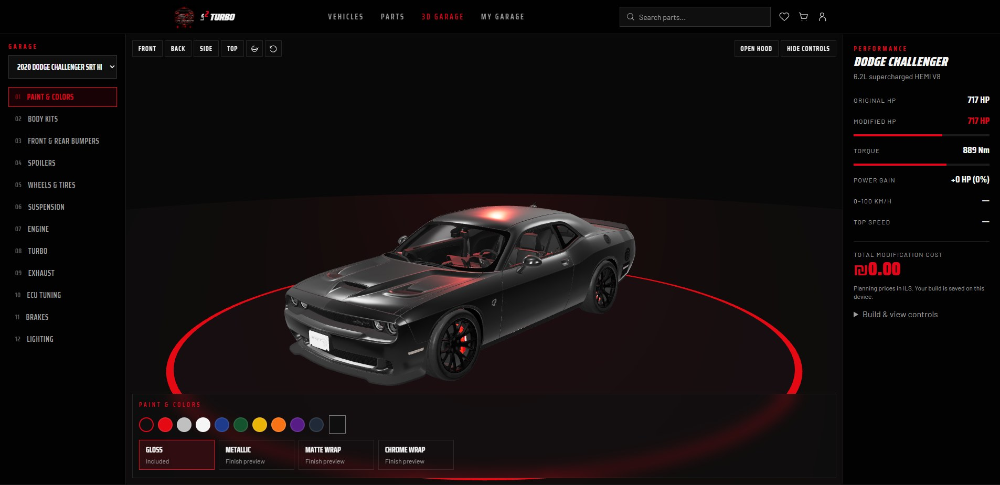

Interactive web experience
S2 TURBO
An automotive customization platform with a parts catalog and interactive 3D garage. Includes compatible-part previews, before-and-after comparisons, saved configurations, and performance estimates.
JavaScriptThree.jsSupabaseVite